Proporção
Leitura das características faciais, formato do rosto e proporções.
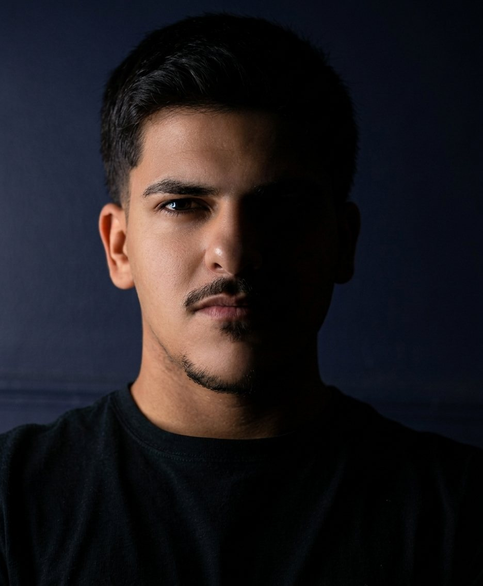
Uma abordagem estratégica para alinhar corte, barba, proporções e identidade à imagem que você deseja transmitir.
O visagismo parte da compreensão de que sua imagem comunica quem você é, como deseja ser percebido e quais características deseja transmitir.
A partir dessa análise, corte, barba, proporções e estilo passam a trabalhar juntos para construir uma imagem coerente com sua identidade.
Cada decisão visual possui uma intenção. O objetivo não é seguir uma tendência, mas construir uma imagem que faça sentido para você.
Leitura das características faciais, formato do rosto e proporções.
Entendimento da identidade, estilo e mensagem que você deseja transmitir.
Corte, barba e elementos visuais são definidos de forma estratégica.
Uma imagem mais alinhada, intencional e coerente com seus objetivos.
Conhecemos seu rosto, características, rotina, estilo e objetivos.
Definimos quais elementos visuais melhor representam sua identidade.
Corte, barba e detalhes são trabalhados de maneira integrada.
O resultado passa a traduzir visualmente quem você é e como deseja ser percebido.
Cada transformação é pensada de acordo com os traços, proporções e identidade de cada cliente.
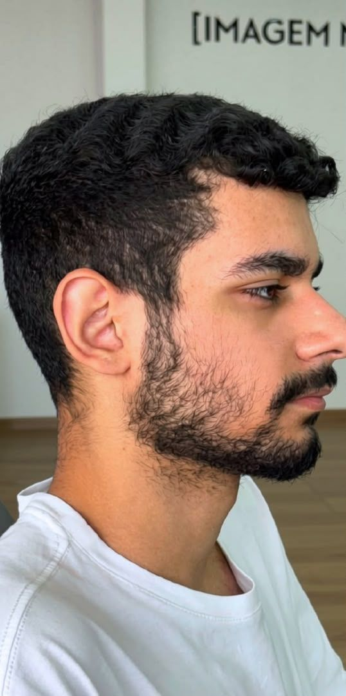
ANTES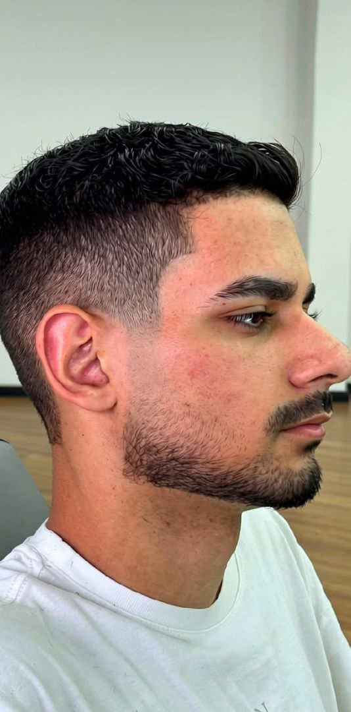
DEPOISUm corte pensado para valorizar os traços e criar uma leitura visual mais equilibrada.
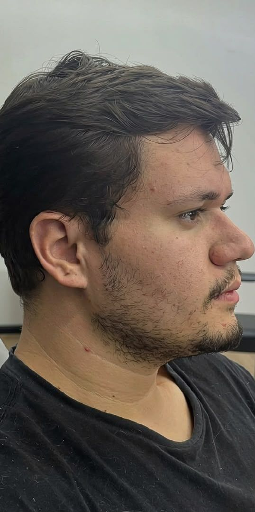
ANTES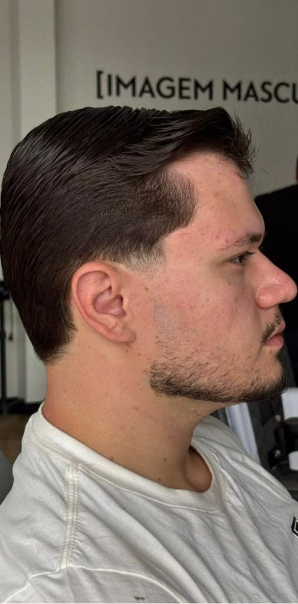
DEPOISMais definição, proporção e presença, respeitando a identidade individual.
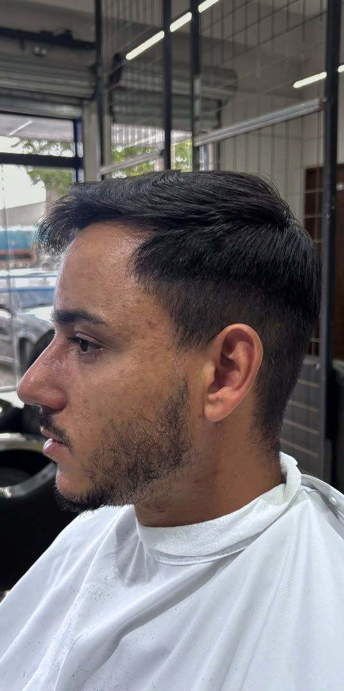
ANTES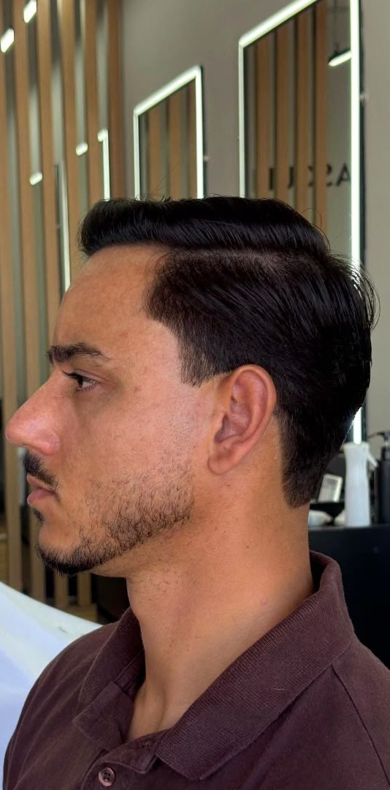
DEPOISUma nova leitura visual construída a partir das características do cliente.
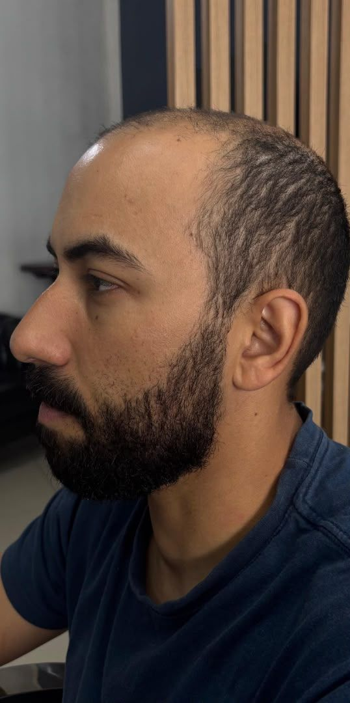
ANTES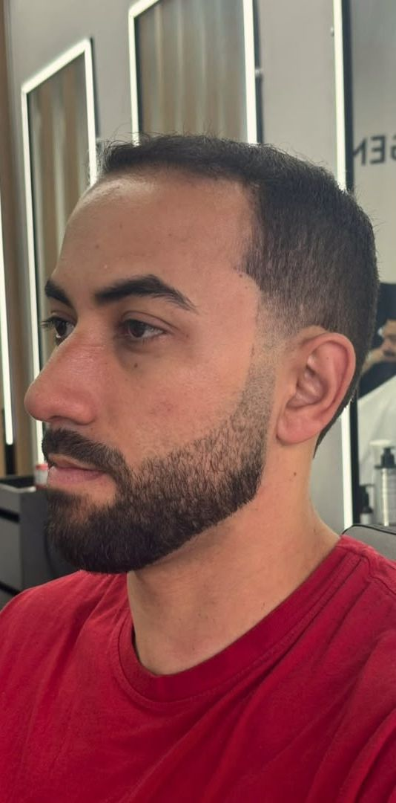
DEPOISUma nova leitura visual sem perder a identidade individual.
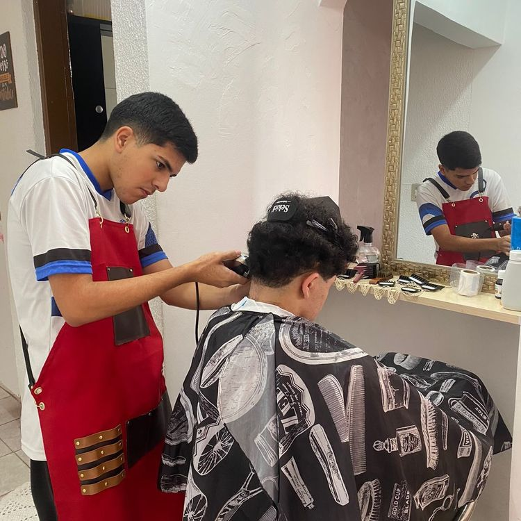
Evolução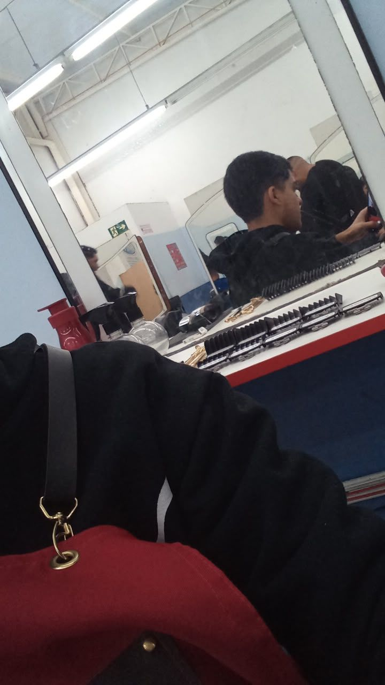
Trajetória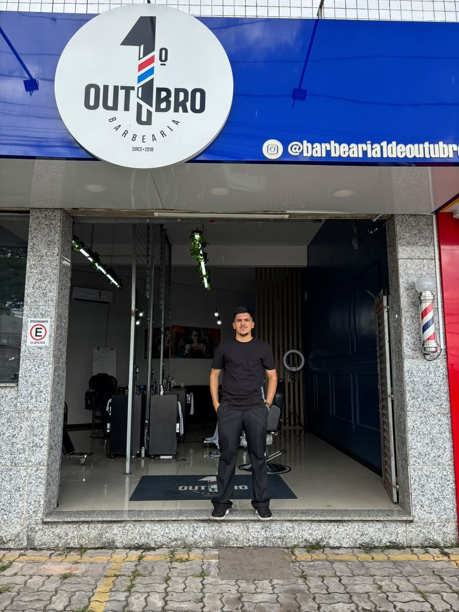
Local de trabalho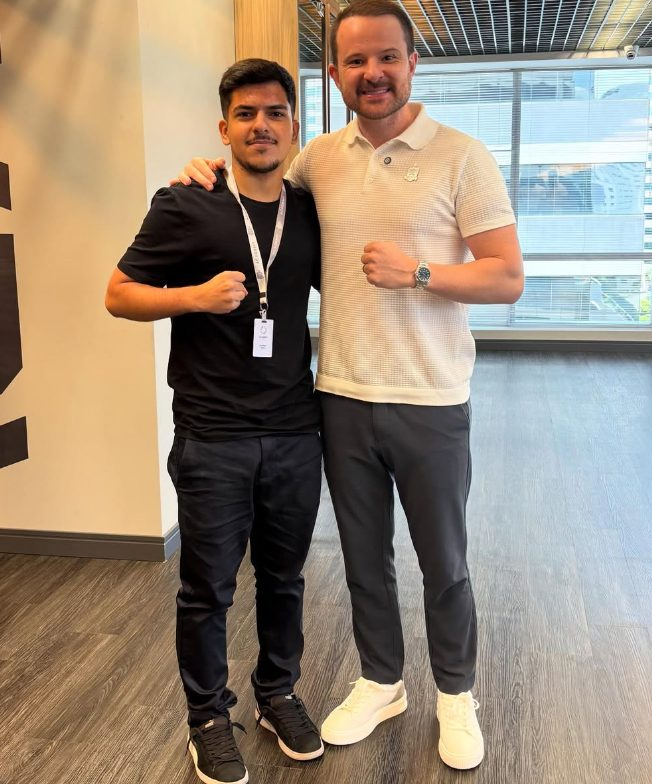
Mentoria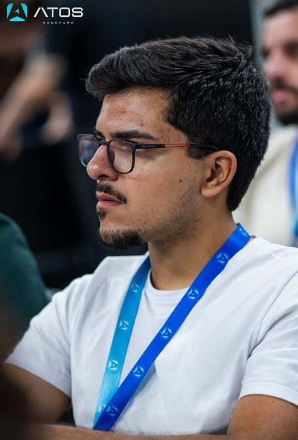
Formação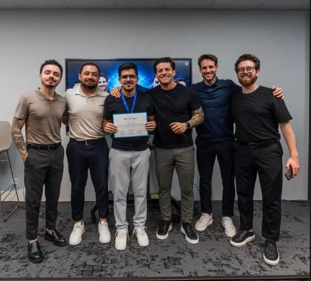
Florianópolis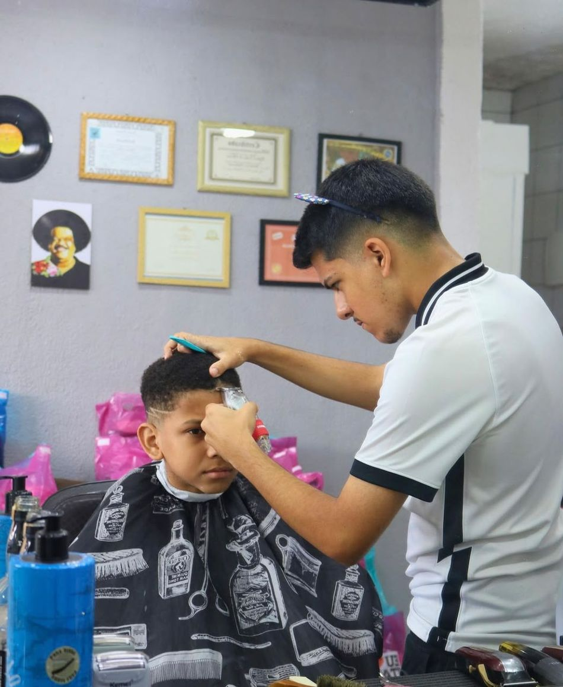
TransformaçãoVamos entender o que sua imagem comunica hoje e construir uma presença mais alinhada com quem você é.
Fale com Rodrigo ↗Uma trajetória construída através de aprendizado, prática e busca constante por evolução.
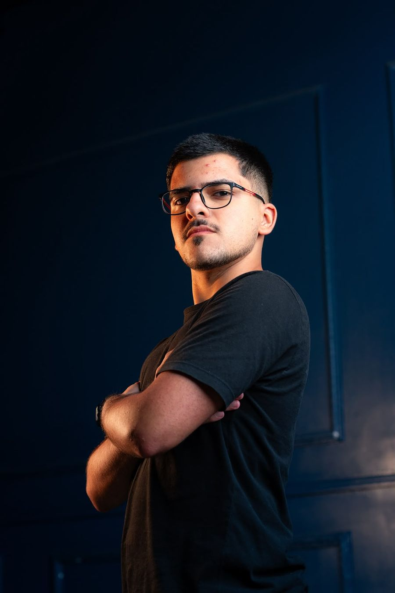
Minha trajetória começou em fevereiro de 2023, quando iniciei minha formação com Rafão Barber. Ao mesmo tempo, comecei a atender clientes em casa, dando os primeiros passos profissionais.
Desde então, cada experiência trouxe novos aprendizados e ajudou a desenvolver uma visão cada vez mais completa sobre imagem masculina.
"Mais do que transformar um visual, quero ajudar cada homem a entender a imagem que deseja transmitir."
Início da formação com Rafão Barber e primeiros atendimentos realizados em casa.
Saída do trabalho anterior e entrada na barbearia do Rafão, iniciando uma nova etapa profissional.
Nova etapa profissional na 1º de Outubro Barbearia, atualmente Rarus.
Aperfeiçoamento profissional através de formação especializada em Florianópolis.
Atuação como barbeiro, consultor de imagem masculina e especialista em visagismo em Itapecerica da Serra e região.
Formação que marcou o início da trajetória profissional de Rodrigo.
Aperfeiçoamento técnico e profissional em busca de uma visão mais completa sobre imagem masculina.
Formação complementar com certificação, ampliando ainda mais a base técnica de Rodrigo.
Novos eventos, experiências e projetos serão apresentados aqui.